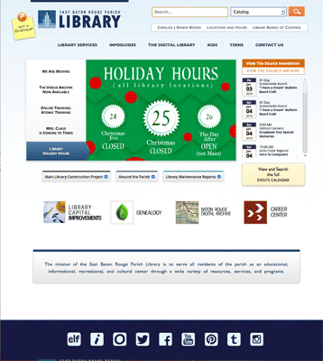
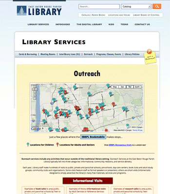
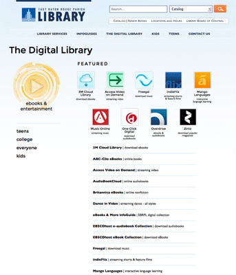
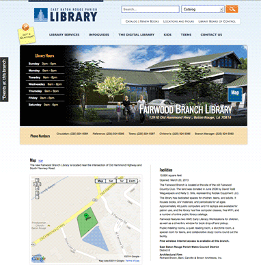

ebrpl.com
In the spring of 2010, work began re-designing the website for the Library System of East Baton Rouge Parish. For years, content providers had been adding content without much focus on content strategy or IA. The structure of the site at large was not directed toward defined goals or clearly calling the public to the information they needed at the point of use.
First steps were to determine the most important content for the mission and strategy of the organization. Library administration and staff were consulted to get their expert opinions of what they and the public needed to have easy access to first and foremost. This was no small task, as a library's mission is serve everyone with everything they could possibly need information-wise.
 Once we had a solid idea of the new strategy for the site, I began designing site and module concepts for testing. The feedback received from the library staff and the public was invaluable in moving forward with the designs and planning. After this research was gathered, the most important features/functions that stood out for the local community were determined as: (1) Access to search library resources; (2) Locations & Hours; (3) Renewing Books; (4) Access to the Library Board's Activities.
 In the summer of 2010, at the end of the research and early design phases, coding and staging began with a launch date of December 23. Though a full re-design of site content and structure was in the works, with specs and requirements changing here and there, the Christmas goal was indeed met - launching before the expected date.
The past three years have, of course, seen a fair number of iterations and additions: various mini-sites for events and programs, a mobile site for easy access to digital resources (early Spring 2011), refinement of site navigation, regular content audits, redesign of access to digital resources and databases, as well constant improvements to site appearance and functionality.